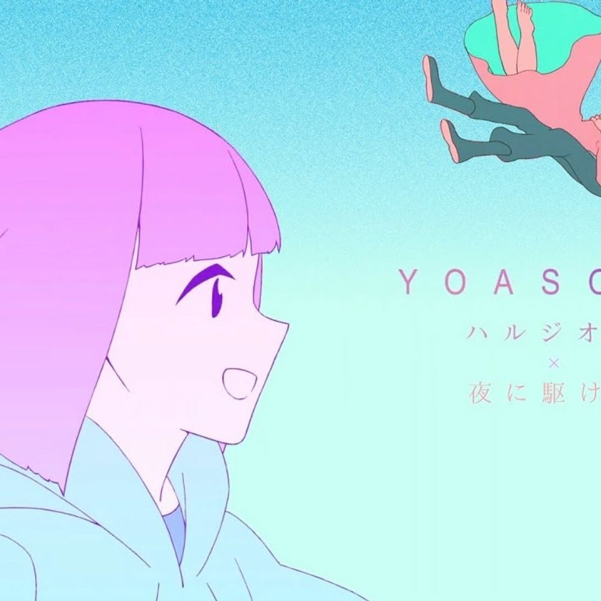
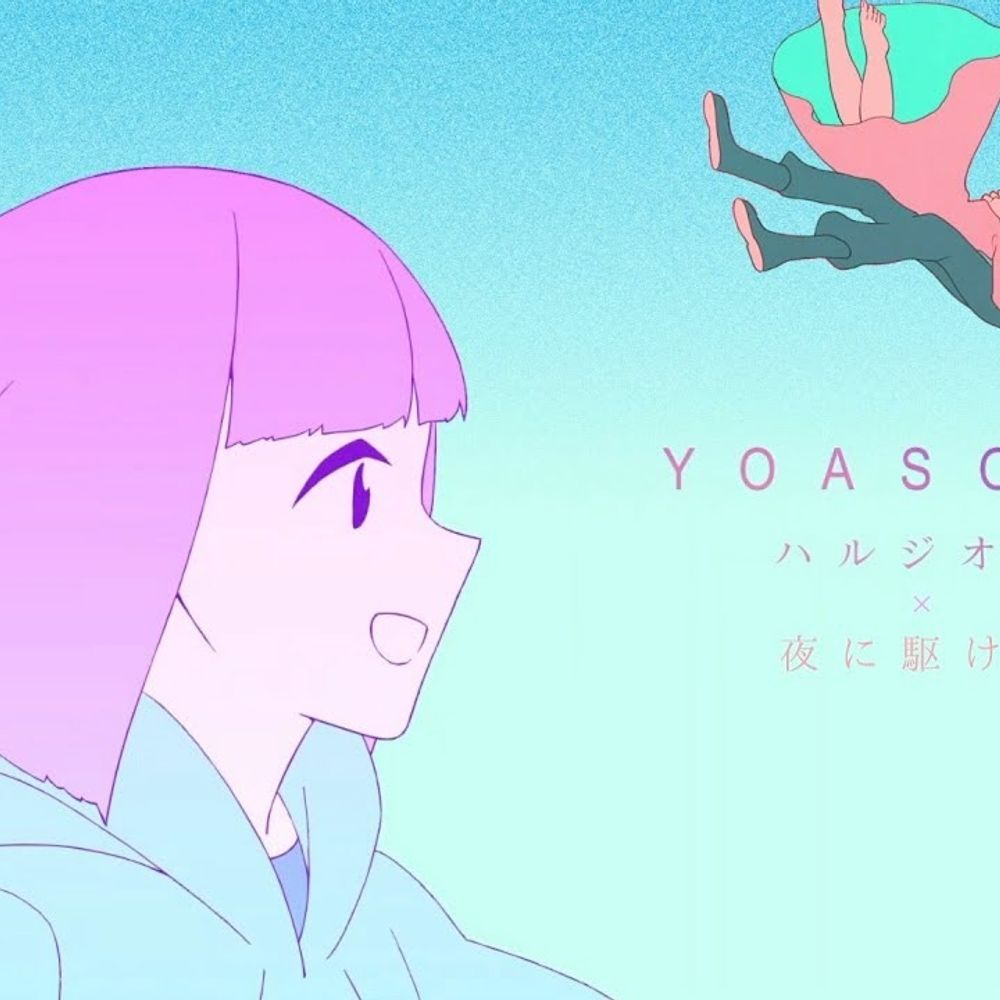
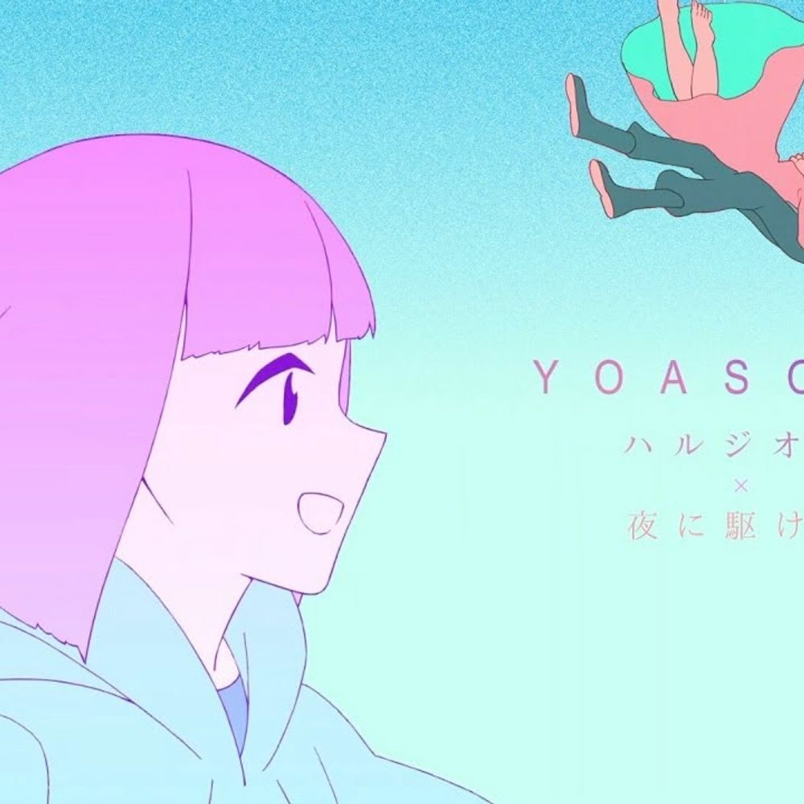

ハルジオン
The music video for “Ankoru” (Encore) features artwork by illustrator and animator Bun. A love story between a boy and a girl set during the end of the world is depicted with a disarmingly casual everyday-ness.
 
The music video for “Ankoru” (Encore) features artwork by illustrator and animator Bun. A love story between a boy and a girl set during the end of the world is depicted with a disarmingly casual everyday-ness.
“Probably” depicts the breakup of a young couple. The music video tells the story through Saho Nanjo’s pastel world, a fusion of the everyday and the fantastical.

“Tanatosu no Yuwaku” (A temptation from Thanatos). Ayase says that of all their songs, this one took the longest to complete.


The song was featured as an opening theme song for the second season of the anime television series Beastars.